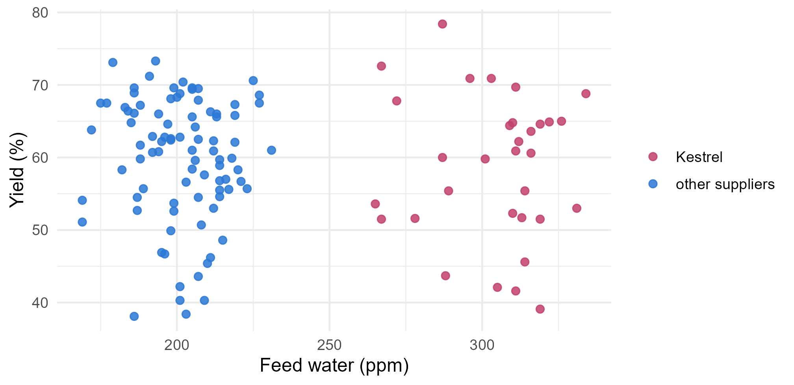
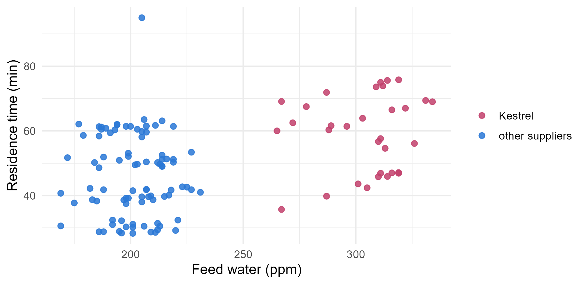
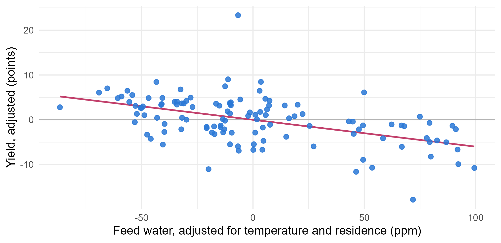

Module 2 · Lesson 5 of 15 Week 35 of 160 About 5–7 hours
Multiple linear regression
Several predictors at once, and what a coefficient means when the others are held fixed
Fit models with several predictors, interpret each coefficient as a partial effect, see how a confounder can hide a real effect, look at partial effects with added-variable plots, and compare models with R-squared and adjusted R-squared.
A yield doesn’t depend on one thing. Temperature, residence time, the feed, the catalyst and a dozen other things all push it around at once. Simple regression looks at one of them and lumps the rest into the error. Multiple regression looks at several together, and that changes what you can learn, sometimes completely. In this lesson, a relationship that’s invisible in a scatterplot turns out to cost the plant six points of yield.
New data! The process-development team ran a big study, and it’s going to keep us company for most of this module. It has secrets. Let’s start digging!
In this lesson you’ll:
- meet the April-May process study
- fit models with several predictors, and interpret each coefficient
- see how a confounder can hide a real effect, and measure the damage
- look at one predictor’s partial effect with an added-variable plot
- compare models with R^2 and adjusted R^2
- predict the yield for new conditions
The process study
In April and May, the process-development team ran 120 batches on the two pilot reactors, to learn how the process responds. They varied the temperature and residence time on purpose, rotated three catalysts, and recorded much more than in March:
study <- read_csv("data/process_study.csv", show_col_types = FALSE)
glimpse(study)
#> Rows: 120
#> Columns: 19
#> $ run_id <chr> "P001", "P002", "P003", "P004", "P005", "P006", "P007",…
#> $ run_date <date> 2026-04-01, 2026-04-01, 2026-04-02, 2026-04-02, 2026-0…
#> $ reactor <chr> "R1", "R2", "R1", "R2", "R1", "R2", "R1", "R2", "R1", "…
#> $ catalyst <chr> "A", "B", "A", "B", "A", "B", "A", "B", "A", "B", "A", …
#> $ catalyst_age <dbl> 1, 1, 2, 2, 3, 3, 4, 4, 5, 5, 6, 6, 7, 7, 8, 8, 9, 9, 1…
#> $ lot_id <chr> "L26-031", "L26-031", "L26-031", "L26-031", "L26-031", …
#> $ supplier <chr> "Fizzwell", "Fizzwell", "Fizzwell", "Fizzwell", "Fizzwe…
#> $ feed_water_ppm <dbl> 212, 213, 214, 225, 221, 220, 215, 207, 186, 186, 187, …
#> $ temp_C <dbl> 195.8, 199.4, 175.3, 194.9, 188.7, 192.2, 174.4, 200.0,…
#> $ jacket_C <dbl> 207.0, 209.6, 185.8, 208.6, 201.6, 203.7, 186.9, 212.1,…
#> $ pressure_bar <dbl> 4.37, 4.72, 3.92, 4.34, 4.13, 4.26, 3.62, 4.47, 4.88, 4…
#> $ residence_min <dbl> 31.4, 30.5, 49.1, 42.6, 32.4, 29.2, 39.7, 41.9, 48.6, 5…
#> $ feed_rate_Lmin <dbl> 12.67, 13.17, 8.34, 9.63, 12.70, 13.74, 10.02, 9.74, 7.…
#> $ stir_rpm <dbl> 349, 347, 345, 351, 352, 299, 298, 304, 301, 397, 346, …
#> $ ambient_C <dbl> 7.7, 8.3, 8.3, 5.9, 3.2, 7.9, 9.2, 6.9, 4.9, 1.7, 7.9, …
#> $ operator_id <chr> "OP6", "OP2", "OP2", "OP1", "OP4", "OP2", "OP2", "OP1",…
#> $ yield_pct <dbl> 62.3, 66.0, 56.8, 70.6, 56.7, 58.3, 48.6, 67.9, 66.1, 6…
#> $ purity_pct <dbl> 98.69, 98.46, 99.44, 98.73, 99.25, 99.32, 99.58, 98.55,…
#> $ notes <chr> NA, NA, NA, NA, NA, NA, NA, NA, NA, NA, NA, "Sample tak…Each row is a run. Most columns explain themselves, and a few are new:
| Column | What it is |
|---|---|
catalyst, catalyst_age |
the catalyst charge in the reactor (A, B or C), and how many runs that charge has done, from 1 to 10 |
lot_id, supplier |
the feed lot, and who supplied it. Kestrel is the supplier whose lots were wet in Module 1 |
feed_water_ppm |
the water content of the feed, measured by the lab for every run |
jacket_C |
the temperature of the heating jacket around the reactor |
feed_rate_Lmin |
how fast the feed was pumped in, in liters per minute |
notes |
anything the operators wrote down |
This lesson uses four of them: the yield, the temperature, the residence time and the feed water. The rest will get their turn.
Does the feed water matter?
Module 1’s story was that Kestrel’s feed lots are wet. Water is supposed to poison the catalyst. So does wet feed lower the yield? Here’s the obvious first look:
study |>
mutate(feed = if_else(supplier == "Kestrel", "Kestrel", "other suppliers")) |>
ggplot(aes(x = feed_water_ppm, y = yield_pct, color = feed)) +
geom_point(size = 2, alpha = 0.85) +
scale_color_manual(values = c(Kestrel = "#C2416C", "other suppliers" = "#2a78d6")) +
labs(x = "Feed water (ppm)", y = "Yield (%)", color = NULL) +
theme_minimal(base_size = 12)
The Kestrel runs, on the right, have about 100 ppm more water than everyone else’s, and their yields look… about the same. The correlation is only −0.08.
Your turn. Fit a simple regression of the yield on the feed water. How much yield does each ppm of water cost?
The predictor is feed_water_ppm.
coef(lm(yield_pct ~ feed_water_ppm, data = study))A slope of −0.015 points per ppm: 1.5 points of yield per 100 ppm of water. That’s small, and with this much scatter it’s hard to even be sure it isn’t zero. On this evidence, Kestrel’s feed looks fine. Hold that thought.
Several predictors at once
The multiple linear regression model adds more predictors to the line:
Y_i = \beta_0 + \beta_1 x_{i1} + \beta_2 x_{i2} + \dots + \beta_k x_{ik} + \varepsilon_i .
With two predictors, the “line” is a flat plane over the (x_1, x_2) floor. With more, it’s a flat surface in more dimensions than anyone can picture, but the algebra from Lesson 4 doesn’t care: each predictor is one more column of X, and \mathbf{b} = (X^\top X)^{-1}X^\top\mathbf{y} as before.
In lm(), you add predictors with +:
fit <- lm(yield_pct ~ temp_C + residence_min + feed_water_ppm, data = study)
summary(fit)
#>
#> Call:
#> lm(formula = yield_pct ~ temp_C + residence_min + feed_water_ppm,
#> data = study)
#>
#> Residuals:
#> Min 1Q Median 3Q Max
#> -13.5330 -2.8360 0.6888 2.5893 22.9655
#>
#> Coefficients:
#> Estimate Std. Error t value Pr(>|t|)
#> (Intercept) -47.854790 6.946865 -6.889 3.09e-10 ***
#> temp_C 0.562215 0.035443 15.862 < 2e-16 ***
#> residence_min 0.321984 0.034208 9.412 5.66e-16 ***
#> feed_water_ppm -0.060028 0.009737 -6.165 1.06e-08 ***
#> ---
#> Signif. codes: 0 '***' 0.001 '**' 0.01 '*' 0.05 '.' 0.1 ' ' 1
#>
#> Residual standard error: 4.637 on 116 degrees of freedom
#> Multiple R-squared: 0.7336, Adjusted R-squared: 0.7267
#> F-statistic: 106.5 on 3 and 116 DF, p-value: < 2.2e-16How do you read these coefficients? Each one is a partial effect: the change in the average yield for a one-unit change in that predictor, with the other predictors held fixed.
- Temperature: among runs with the same residence time and feed water, each extra degree goes with 0.56 points more yield.
- Residence time: at a fixed temperature and water content, each extra minute adds 0.32 points.
- Feed water: at a fixed temperature and residence time, each extra ppm costs 0.060 points. That’s 6 points per 100 ppm, four times what the simple regression said, and it’s very clearly not zero (t = -6.2).
“Held fixed” is a statement about the model, not about the plant: nobody held anything fixed while running these batches. The regression compares runs that differ in one predictor after accounting for how they differ in the others. That’s powerful, but it only accounts for the predictors you put in.
The residual standard error has dropped from 8.4 points, with residence time alone, to 4.6. Notice, too, that the largest residual is +23 points: one run did far better than the model expects. Remember it. You’ll meet it again in Lesson 10.
Your turn. Fit the model with all three predictors, and pull out its coefficients.
Add residence_min and feed_water_ppm, separated by +.
fit <- lm(yield_pct ~ temp_C + residence_min + feed_water_ppm, data = study)
coef(fit)0.562 points per degree, 0.322 per minute and −0.060 per ppm. The order of the predictors in the formula doesn’t change the coefficients.
Confounding: how the water effect hid
If water costs 6 points per 100 ppm, why did the scatterplot show nothing? Look at what the operators did with the wet lots:
study |>
mutate(feed = if_else(supplier == "Kestrel", "Kestrel", "other suppliers")) |>
ggplot(aes(x = feed_water_ppm, y = residence_min, color = feed)) +
geom_point(size = 2, alpha = 0.85) +
scale_color_manual(values = c(Kestrel = "#C2416C", "other suppliers" = "#2a78d6")) +
labs(x = "Feed water (ppm)", y = "Residence time (min)", color = NULL) +
theme_minimal(base_size = 12)
The operators know that wet feed reacts sluggishly, so they left those batches in the reactor longer: Kestrel’s runs averaged 59 minutes, against 46 for everyone else’s. The extra 13 minutes bought back about 4 points of yield, which hid most of the 6 points that the water cost. In the simple scatterplot, the Kestrel runs look normal, because they’re wetter and longer.
Residence time is a confounder here: it’s related to the predictor of interest (water) and, separately, to the response (yield). Leaving a confounder out of a model biases the coefficients of the predictors it’s related to. And it works both ways round: leaving the water out makes residence time look less useful than it is, because the long runs were disproportionately the wet ones.
| Model | Water effect (per ppm) | Residence effect (per min) |
|---|---|---|
| water alone | −0.015 | |
| residence alone | 0.209 | |
| temperature + water | −0.023 | |
| temperature + residence | 0.236 | |
| all three | −0.060 | 0.322 |
Which number is “the” effect of water? The one from the model that accounts for the confounders. Here we know the story, so we know that’s the full model. In general, it’s the reason you put predictors in a model even when you don’t care about their own coefficients.
NoteGo deeper: the omitted-variable bias formula
Suppose the full model is y = b_0 + b_1 x_1 + b_2 x_2 + e, and you leave x_2 out. Regress x_2 on x_1 (and the other predictors you kept), and call the slope on x_1 \delta. Then the coefficient of x_1 in the short model is exactly
b_1^{\text{short}} = b_1 + b_2\,\delta .
The bias is the omitted variable’s effect, b_2, times how strongly it tracks x_1, \delta. It disappears if either is zero: if the omitted variable doesn’t affect the response, or if it’s unrelated to x_1. That’s why designed variables are so valuable. When the team sets a variable at random, it can’t line up with anything else, so its \delta is close to zero, and it can’t confound anything.
Here, leaving the water out of the full model: b_{\text{res}} = 0.322, b_{\text{water}} = -0.060, and regressing the water on temperature and residence time gives \delta = 1.43 ppm per minute (long runs were wetter). So the short model’s residence coefficient is 0.322 + (-0.060)(1.43) = 0.236, exactly what the table shows.
The formula is exact for the fitted coefficients, because the full model’s residuals are orthogonal to every predictor (Lesson 4).
Your turn. Check the omitted-variable bias formula. Fit the regression of the water on temperature and residence time, and use its residence coefficient as \delta.
Multiply the water coefficient by delta.
full <- lm(yield_pct ~ temp_C + residence_min + feed_water_ppm, data = study)
delta <- coef(lm(feed_water_ppm ~ temp_C + residence_min, data = study))["residence_min"]
b <- coef(full)
unname(b["residence_min"] + b["feed_water_ppm"] * delta)0.236, exactly the residence coefficient of lm(yield_pct ~ temp_C + residence_min, data = study). The missing water drags the residence effect down by a quarter.
Added-variable plots
A coefficient is a single number. To see a partial effect, with its scatter and any odd points, use an added-variable plot. The idea is the one you used for the partial correlation in Lesson 1:
- Regress the yield on all the other predictors, and keep the residuals: the part of the yield that temperature and residence time don’t explain.
- Regress the water on the same other predictors, and keep those residuals: the part of the water content that isn’t predictable from temperature and residence time.
- Plot the first set of residuals against the second.
yield_left <- resid(lm(yield_pct ~ temp_C + residence_min, data = study))
water_left <- resid(lm(feed_water_ppm ~ temp_C + residence_min, data = study))
ggplot(tibble(water_left, yield_left), aes(x = water_left, y = yield_left)) +
geom_hline(yintercept = 0, color = "grey70") +
geom_smooth(method = "lm", formula = y ~ x, se = FALSE, color = "#C2416C", linewidth = 0.8) +
geom_point(size = 2, color = "#2a78d6", alpha = 0.85) +
labs(x = "Feed water, adjusted for temperature and residence (ppm)",
y = "Yield, adjusted (points)") +
theme_minimal(base_size = 12)
Now the water effect is plain to see. Even better, the slope of this plot is exactly the multiple regression coefficient, −0.060. (This is the Frisch-Waugh-Lovell theorem, and it’s how multiple regression “holds the others fixed”: it takes them out of both the response and the predictor, then fits a simple regression to what’s left.) The residuals of this plot are the full model’s residuals, too, so the plot shows the scatter around that coefficient, and any points that pull it around. That run with a residual of +23 sits at the top.
Your turn. Compute the slope of the added-variable plot, and compare it with the coefficient from the full model.
Regress the water on the same two predictors: feed_water_ppm ~ temp_C + residence_min.
yield_left <- resid(lm(yield_pct ~ temp_C + residence_min, data = study))
water_left <- resid(lm(feed_water_ppm ~ temp_C + residence_min, data = study))
coef(lm(yield_left ~ water_left))[2]−0.060, identical to the full model’s water coefficient.
R² and adjusted R²
R^2 still measures the fraction of the variation explained: 1 - \text{SSE}/\text{SST}. The three-predictor model explains 73% of the variation in yield. But R^2 has a flaw as a way of comparing models: adding a predictor can never make it go down. Least squares can always set the new coefficient to zero, so the SSE can only shrink or stay put. Add the outdoor temperature, the stirrer speed and the operator, none of which affects the yield, and R^2 still creeps up.
Adjusted R^2 charges a penalty for each coefficient:
R^2_{\text{adj}} = 1 - \frac{\text{SSE}/(n - p)}{\text{SST}/(n - 1)} = 1 - (1 - R^2)\,\frac{n - 1}{n - p},
where p counts all the coefficients, including the intercept. It compares the residual variance with the total variance, each divided by its degrees of freedom, so a new predictor only raises it if it reduces the SSE by more than its share of a degree of freedom. It’s no longer “the fraction explained”, and it can even be negative. It’s just a fairer way to compare models of different sizes. (Lesson 12 has better tools still.)
Your turn. Add three useless predictors to the model: the outdoor temperature, the stirrer speed, and the operator. Compare both R^2 values with the three-predictor model’s, 0.734 and 0.727.
summary() stores the adjusted value as adj.r.squared.
bigger <- lm(yield_pct ~ temp_C + residence_min + feed_water_ppm + ambient_C + stir_rpm + operator_id,
data = study)
c(r2 = summary(bigger)$r.squared, adj_r2 = summary(bigger)$adj.r.squared)R^2 rose from 0.734 to 0.741, as it always will. Adjusted R^2 fell from 0.727 to 0.718: the seven extra coefficients didn’t earn their keep.
Why seven extra coefficients? One for the outdoor temperature, one for the stirrer speed, and five for the operator. The operator is a category with six values, OP1 to OP6, and it gets a dummy column for each one except the first, just like the catalysts in Lesson 4’s challenge. Lesson 7 explains why.
Predicting with several predictors
predict() works as before, with one column for each predictor in the new data. This is where the model starts to earn its keep: you can ask about conditions that the plant cares about.
Your turn. Next week’s runs will be at 190 °C and 50 minutes. One will use a normal feed lot with 190 ppm of water, and one a wet lot with 300 ppm. What’s the difference between their predicted yields?
The wet lot has 300 ppm of water.
fit <- lm(yield_pct ~ temp_C + residence_min + feed_water_ppm, data = study)
plans <- tibble(temp_C = 190, residence_min = 50, feed_water_ppm = c(190, 300))
p <- predict(fit, newdata = plans)
p[2] - p[1]−6.6 points: from 63.7% down to 57.1%. That’s just 110 ppm times the water coefficient. To win it back with residence time, the wet batch would need 6.6/0.322 = 20.5 more minutes in the reactor, a big chunk of capacity. Now that’s a number to take to the purchasing department.
Challenge round
Challenge 1 · Which predictor matters most? The coefficients are in different units (points per degree, per minute, per ppm), so you can’t compare their sizes directly. One common fix: convert every variable to z-scores first. Then each coefficient says how many standard deviations the yield moves when that predictor moves by one standard deviation. Fit the standardized model.
The same formula as before, on the standardized data: yield_pct ~ temp_C + residence_min + feed_water_ppm.
z <- study |>
mutate(across(c(yield_pct, temp_C, residence_min, feed_water_ppm), ~ as.numeric(scale(.x))))
coef(lm(yield_pct ~ temp_C + residence_min + feed_water_ppm, data = z))Temperature 0.76, residence time 0.49, water −0.32. Over the ranges in this study, temperature moved the yield the most. But that’s about the ranges as much as the chemistry: the team varied the temperature over 35 degrees. Over a narrower range, it would look less important (remember Lesson 1’s narrow-range correlation). Standardized coefficients describe a dataset, not a law of nature.
Challenge 2 · How bad is Kestrel, really? Kestrel’s runs averaged 3.8 points less yield than Fizzwell’s. Adjust that comparison for temperature and residence time: fit the yield on temp_C, residence_min and supplier, and look at the Kestrel coefficient. (Fizzwell is listed first alphabetically, so it’s the baseline, and each supplier’s coefficient is its difference from Fizzwell.)
Add supplier to the formula. R turns it into dummy columns by itself.
fit_s <- lm(yield_pct ~ temp_C + residence_min + supplier, data = study)
coef(fit_s)["supplierKestrel"]−8.4 points! Compared with Fizzwell runs at the same temperature and residence time, Kestrel runs made 8.4 points less yield, more than twice the raw difference. The raw comparison flattered Kestrel, because its runs got extra reactor time. (The supplier and the water content tell the same story here, since Kestrel’s lots are the wet ones. The supplier coefficient also picks up anything else that differs between suppliers.)
Quick quiz
1. In the full model, the water coefficient is −0.060 points per ppm. What does it mean?
A coefficient in multiple regression is a partial effect: the change in the average response per unit of that predictor, with the other predictors in the model held fixed.
2. Why did the simple regression of yield on water show almost no effect?
Residence time was a confounder: related to the water content and, separately, to the yield. Leaving it out biased the water coefficient towards zero.
3. When does leaving a predictor out of a model not bias the other coefficients?
The bias is b_2\,\delta: the omitted predictor’s effect times how strongly it tracks the predictor you kept. If either is zero, there’s no bias. That’s why randomized, designed variables are so valuable.
4. What’s the slope of an added-variable plot for a predictor?
By the Frisch-Waugh-Lovell theorem, regressing the adjusted response on the adjusted predictor gives exactly the multiple regression coefficient.
5. You add a predictor that has nothing to do with the response. What happens to R^2?
Least squares could set the new coefficient to zero and keep the old fit, so the SSE can’t increase. That’s why R^2 can’t be used to decide whether a predictor belongs.
6. What does adjusted R^2 do that R^2 doesn’t?
It divides both sums of squares by their degrees of freedom, so a predictor has to reduce the SSE enough to make up for the degree of freedom it uses.
Wrap-up
You’ve fitted your first models with several predictors, and seen why they matter! Here’s what you’ve learned:
- The model: Y = \beta_0 + \beta_1 x_1 + \dots + \beta_k x_k + \varepsilon, fitted with
lm(y ~ x1 + x2 + ...). The matrix formulas from Lesson 4 work unchanged. - Interpretation: each coefficient is a partial effect, the change in the average response per unit of its predictor with the others held fixed. “Held fixed” means “adjusted for”, within the model.
- Confounding: leaving out a variable that’s related to both a predictor and the response biases that predictor’s coefficient, by b_2\,\delta. Here, it hid a water effect of 6 points per 100 ppm, because wet lots got extra residence time.
- Added-variable plots show a partial effect: the adjusted response against the adjusted predictor. Their slope is the multiple regression coefficient.
- R^2 never falls when you add a predictor. Adjusted R^2 charges for each coefficient, so it’s fairer for comparing models of different sizes.
- Standardized coefficients compare predictors on a common scale, but they depend on how much each predictor varied in the data.
TipPractice in RStudio (optional, about an hour)
Download process_study.csv into your project’s data-raw/ folder, and install the car package.
- All the added-variable plots at once. Run
car::avPlots(fit)on the three-predictor model. It draws an added-variable plot for each predictor, and labels the most unusual points. Which run is that +23 residual? - A 3D view. Install the plotly package and draw the yield against temperature and residence time:
plotly::plot_ly(study, x = ~temp_C, y = ~residence_min, z = ~yield_pct, type = "scatter3d", mode = "markers"). Spin it around. Can you see the plane? - Purity. Fit the purity on the same three predictors. Which ones matter, and in which direction? Does wet feed hurt the purity too?
- Confounding by hand. Simulate it:
x1 <- rnorm(200),x2 <- 0.8 * x1 + rnorm(200, sd = 0.6),y <- 2 * x1 - 3 * x2 + rnorm(200). Compare the simple slope ofyonx1with its coefficient in the model with both. Check the omitted-variable bias formula.
NoteKey words from this lesson
- Multiple linear regression
- A model of a response as a linear function of several predictors, plus random error.
- Partial effect
- The change in the average response for a one-unit change in one predictor, with the other predictors in the model held fixed.
- Confounder
- A variable related both to a predictor of interest and to the response. Leaving it out biases the predictor’s coefficient.
- Omitted-variable bias
- The bias in a coefficient caused by leaving a confounder out of the model: the omitted variable’s effect times its slope on the included predictor.
- Added-variable plot
- A plot of the response against one predictor, after both have been adjusted for the other predictors. Its slope equals that predictor’s multiple regression coefficient.
- Adjusted R^2
- 1 - (1 - R^2)(n - 1)/(n - p), a version of R^2 that charges for each estimated coefficient.
- Standardized coefficient
- A coefficient from a model where every variable has been converted to z-scores.
NoteWant to read more?
- Penn State STAT 501, Lesson 5: Multiple Linear Regression. Fitting, interpreting and assessing models with several predictors.
- Introduction to Modern Statistics, “Linear regression with multiple predictors”. Friendly and full of examples, including adjusted R^2.
- Andrew Gelman, Jennifer Hill and Aki Vehtari, Regression and Other Stories, chapter 10. Excellent on what coefficients do and don’t mean, and on interpreting models in context.